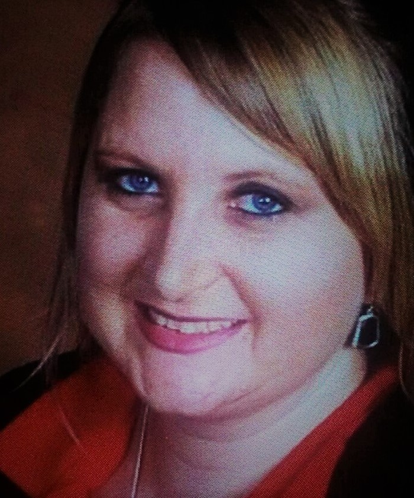

About Me

I am one of those people that you would classify as "ambitious" and "crazy" because I am not one who is afraid to try new things, like career changes. Over the past 11 years, I have changed my field 3 times. My employment searches have always been for administrative rolls, however; in this job market, hopes of landing permanent employment with benefits has just been unobtainable.
In 2013, while searching for employment, an opportunity came across that I couldn't turn down. I quickly passed the state exam and became a licensed life insurance agent. Well, like most businesses and opportunities, you do need to have steady income in order to invest more into your training and the funds just were not there for me. The one solid thing that everyone knows about me is I just do not quit or giveup, continuing to discover myself around every corner.